susieR Logistic Regression GLM
Andrew Goldstein
May 6, 2019
Last updated: 2019-05-06
workflowr checks: (Click a bullet for more information)-
✔ R Markdown file: up-to-date
Great! Since the R Markdown file has been committed to the Git repository, you know the exact version of the code that produced these results.
-
✔ Environment: empty
Great job! The global environment was empty. Objects defined in the global environment can affect the analysis in your R Markdown file in unknown ways. For reproduciblity it’s best to always run the code in an empty environment.
-
✔ Seed:
set.seed(20181203)The command
set.seed(20181203)was run prior to running the code in the R Markdown file. Setting a seed ensures that any results that rely on randomness, e.g. subsampling or permutations, are reproducible. -
✔ Session information: recorded
Great job! Recording the operating system, R version, and package versions is critical for reproducibility.
-
Great! You are using Git for version control. Tracking code development and connecting the code version to the results is critical for reproducibility. The version displayed above was the version of the Git repository at the time these results were generated.✔ Repository version: 5ea56ea
Note that you need to be careful to ensure that all relevant files for the analysis have been committed to Git prior to generating the results (you can usewflow_publishorwflow_git_commit). workflowr only checks the R Markdown file, but you know if there are other scripts or data files that it depends on. Below is the status of the Git repository when the results were generated:
Note that any generated files, e.g. HTML, png, CSS, etc., are not included in this status report because it is ok for generated content to have uncommitted changes.Ignored files: Ignored: .Rhistory Ignored: analysis/.Rhistory Ignored: analysis/VB_susie_logistic_demonstration_cache/ Ignored: analysis/susie_logistic_demonstration_cache/
Expand here to see past versions:
Introduction
This page aims to explore an analog to SuSiE applied to 0/1 data using logistic regression. In my first attempt, I tried to replace the Single Effect Regression (SER) step in the Iterative Bayesian Forward Selection (IBFS) algorithm with an analogous logistic regression step. See here. Here, instead of relying on the linear SuSiE results and modifying the updates to what the analogous updates seem like they should be in the logistic case, I start from the ground up and derive the variational updates in this case directly.
Our response is \(\mathbf{y} \in \mathbb{R}^n\), and our covariates are \(\mathbf{X} \in \mathbb{R}^{n \times p}\).
Full Model
The full SuSiE model is as follows: \[ \begin{aligned} \mathbf{y} \sim \text{Bern}\Bigg(\frac{e^\mathbf{Xb}}{1 + e^{\mathbf{Xb}}}\Bigg) \quad \text{(element-wise)} \\ \mathbf{b} = \sum_{l = 1}^L \mathbf{b}_l \\ \mathbf{b}_l = \gamma_l b_l \quad (\text{independently for } l = 1, \dots, L) \\ \gamma_l \sim \text{Mult}(1, \mathbf{\pi}) \\ b_l \sim \mathcal{N}(0, \sigma_{0l}^2) \end{aligned} \]
Variational Algorithm
As in linear SuSiE, we optimize over the class of distributions that factorize over \(b_l\), i.e. \(Q(\mathbf{b}) = \prod_{l=1}^L q_l(\mathbf{b}_l)\). Normally, the updates would be \(q_l(\mathbf{b}_l) \propto \exp\{\mathbb{E}_{-(q_l)}[\log (p(y|\mathbf{b}_1, \dots, \mathbf{b}_L) \cdot p(\mathbf{b}_1, \dots, \mathbf{b}_L)\}\). However, this gets ugly quickly, in large part due to the \(\log(1 + \exp\{X\mathbf{b}\})\) term in the likelihood.
Instead, we can use a lower bound, \(h\) on the likelihood \(p(y|\mathbf{b}) \ge h(\mathbf{b}; \xi)\) in our algorithm (\(\xi\) are variational parameters that we optimize over). So the derivation of VB is \[ \log(p(y)) = \log \Big(\int p(y|b) p(b) db\Big) \ge \log \Big(\int h(b;\xi) p(b) db\Big) \ge [\text{Jensen}] \ge \int q(b) \log \frac{h(b;\xi)p(b)}{q(b)} db \] Proceeding in the same manner as the general derivation of VB, we obtain the following updates: \[ \begin{aligned} q_l(\mathbf{b}_l) \propto \exp\{\mathbb{E}_{-(q_l)}[\log (h(\mathbf{b}; \xi) \cdot p(\mathbf{b}_l)\} \\ \xi = \arg \max_\xi \mathbb{E}_{\mathbf{b} \sim Q}[\log h(\mathbf{b};\xi)] \end{aligned} \]
For our lower bound, we turn to “A Variational Approach to Bayesian Logistic Regression Models and their Extensions” (Jaakkola and Jordan, 1996). In this paper, they state the following lower bound result in the logistic response setting:
Let \(g(x) = \frac{e^x}{1 + e^x}\) (the inverse logit transformation). Then \[ P(y_i|x_i, \beta) = g(X_y) \ge g(\xi) \exp\Big\{\frac{X_y - \xi}{2} + \lambda(\xi)(X_y^2 - \xi^2)\Big\} \] where \(X_y = (2y_i - 1)x_i^T \beta\) and \(\lambda(\xi) = \frac{1}{2\xi} (g(\xi) - \frac{1}{2})\). (The same bound is used in “Sparse Bayesian Logistic Regression with Hierarchical Prior and Variational Inference” (Horii, 2017)).
Using this bound, we derive the VB updates as follows: \[ \begin{aligned} q_l(b_l = c \cdot e_j) \propto \exp\Bigg\{\log p(b_l = c e_j) + \sum_{i=1}^n \Big[\log g(\xi_i) + y_i x_i^T(ce_j + \sum_{k \ne l} \bar{b_k} - \frac{x_i^T(ce_j + \sum_{k \ne l} \bar{b_k}) + \xi_i}{2} - \frac{1}{2\xi_i}\Big(g(\xi_i) - \frac{1}{2}\Big)\Big((\mathbb{E}_{-(q_l)}[(x_i^T\sum_{k=1}^L b_k)^2] - \xi_i^2\Big)\Big]\Bigg\} \\ \text{Note: } \mathbb{E}_{-(q_l)}[(x_i^T\sum_{k=1}^L b_k)^2] = \mathbb{E}_{-(q_l)}[(c x_i^Te_j + \sum_{k \ne l}x_i^Tb_k)^2] = c^2 (x_i^Te_j)^2 + x_i^T \mathbb{E}_{-(q_l)}[(\sum_{k \ne l}b_k)^2] + 2(cx_i^Te_j)(x_i^T\sum_{k \ne l}\bar{b_k}) = c^2 (x_i^Te_j)^2 + 2(cx_i^Te_j)(x_i^T\sum_{k \ne l}\bar{b_k}) + (const \; in \; b_l) \\ \therefore q_l(b_l = c \cdot e_j) \propto \exp\Bigg\{\log p(b_l = c e_j) + \sum_{i=1}^n \Big[\log g(\xi_i) + y_i x_i^T(ce_j + \sum_{k \ne l} \bar{b_k} - \frac{x_i^T(ce_j + \sum_{k \ne l} \bar{b_k}) + \xi_i}{2} - \frac{1}{2\xi_i}\Big(g(\xi_i) - \frac{1}{2}\Big)\Big((c^2(x_i^Te_j)^2 + (cx_i^Te_j)(x_i^T \sum_{k \ne l} \bar{b_k}) - \xi_i^2\Big)\Big]\Bigg\} \propto \\ [\text{collect terms and complete the square}] \\ \propto \exp\Bigg\{\log(\pi_j) - \frac{\tau_{jl}}{2}\Bigg(c - \frac{\nu_{jl}}{\tau_{jl}}\Bigg)^2 + \frac{\nu_{jl}^2}{2\tau_{jl}}\Bigg\} \\ \text{where } \nu_{jl} = \sum_{i=1}^n x_i^Te_j\Big(y_i - \frac{1}{2} - \frac{1}{\xi_i}(g(\xi_i) - \frac{1}{2})(x_i^T \sum_{k \ne l}\bar{b_k})\Big) \text{ and } \tau_{jl}^2 = \frac{1}{\sigma_0^2} + \sum_{i=1}^n \frac{1}{\xi_i}(g(\xi_i) - \frac{1}{2})(x_i^Te_j)^2 \end{aligned} \] Note that this is a mixture of a multinoulli draw for the non-zero element of \(b_l\) and then a normal draw for the value of that non-zero element. In particular, \[ \begin{aligned} q(\gamma_l = j) = \pi_j \cdot \exp \Bigg\{\frac{\nu_{jl}^2}{2\tau_{jl}}\Bigg\} \\ b_{l_j}|\gamma_l = j \sim_{q_l} \mathcal{N}\Big(\frac{\nu_{jl}}{\tau_{jl}}, \frac{1}{\tau_{jl}}\Big) \end{aligned} \]
For the updates to \(\xi\): \[ \begin{aligned} \xi = \arg \max_\xi \mathbb{E}_{b \sim Q}[\log h(\beta; \xi)] = \arg \max_\xi \sum_{i=1}^n \log(g(\xi_i)) + y_i x_i^T\mathbb{E}_{b \sim Q}[\mathbf{b}] - \frac{x_i^T\mathbb{E}_{b \sim Q}[\mathbf{b}] + \xi_i}{2} - \frac{1}{2 \xi_i}(g(\xi_i) - \frac{1}{2})(\mathbb{E}_{b \sim Q}[(x_i^T\mathbf{b})^2] - \xi_i^2) = \\ [\text{remove constants in } \xi_i] = \arg \max_\xi \sum_{i=1}^n \log(g(\xi_i))- \frac{\xi_i}{2} - \frac{1}{2 \xi_i}(g(\xi_i) - \frac{1}{2})(\mathbb{E}_{b \sim Q}[(x_i^T\mathbf{b})^2] - \xi_i^2) \end{aligned} \] Note that this is separable in \(\xi_i\), so we can optimize over each \(\xi_i\) separately. Note further that \[ \begin{aligned} Q_i := \mathbb{E}_{b \sim Q}[(x_i^T\mathbf{b})^2] = \mathbb{E}_{b_1 \sim q_1, \dots, b_L \sim q_L}[(x_i^T \sum_{l=1}^L b_l)^2] = \mathbb{E}[\sum_{l=1}^L(x_i^T b_l)^2 + 2\sum_{l=1}^L \sum_{k > l}^L (x_i^T b_l)(x_i^T b_k)] = \\ [\text{mean field approximation, so } b_l \perp b_k] = \sum_{l=1}^L \mathbb{E}_{q_l}[(x_i^Tb_l)^2] + 2 \sum_{l=1}^L \sum_{k > l}^L (x_i^T \bar{b_l})(x_i^T \bar{b_k}) \\ \text{where } \mathbb{E}_{q_l}[(x_i^Tb_l)^2] = \sum_{j=1}^p \alpha_{jl} x_{ij}^2(\sigma_{jl}^2 + \mu_{jl}^2) \end{aligned} \] Where \(\alpha_{jl}, \sigma_{jl}^2, \mu_{jl}\) are the posterior inclusion probability for entry \(j\) in \(b_l\), the posterior variance of that entry when selected, and the posterior mean of that entry when selected, selectively.
According to Wolfram Alpha, by taking the derivative of the objective w.r.t. \(\xi_i\), we get a derivative of \[ \frac{(-2e^{\xi_i} \xi_i + e^{2\xi_i} - 1) \cdot (\xi_i^2 - Q)} {4(e^{\xi_i} + 1)^2 \xi_i^2} := 0 \iff \xi_i^2 = \pm Q \Rightarrow \xi_i := +\sqrt{Q} \]
With these updates derived, we can now implement the algorithm.
A Note on the Intercept
In regular SuSiE, we can center our covariates and response to avoid fitting the intercept. Since our data is now 0/1, we can no longer center our response. Instead, we can fit an intercept in our IBFS.
I have not given much thought yet as to how an intercept should be included.
Implementation
The code below is a simplistic implementation of the above ideas.
### NOTE: This is basic code, and I did not attempt to mirror the level of numerical sophistication in the susie functions
### If this idea is worth pursuing further, then this code can be improved
calc_Q = function(X, Sigma2, Mu, Alpha) {
# X is data matrix
# Sigma2[j, l] is the posterior variance for b_l when entry j is selected, p x L
# Mu[j, l] is the posterior mean for b_l when entry j is selected, p x L
# Alpha[j, l] is the posterior probability selecting entry j from b_l, p x L
ASU2 = Alpha * (Sigma2 + Mu^2) # [j, l] = alpha[j, l] * (Sigma2[j, l] + Mu[j, l]^2)
Q = rowSums(X^2 %*% ASU2) # start w/ sum_l E_(ql)[(x_i' b_l)^2]
# now add 2 sum_l sum_{k>l} (x_i' b_l_post)(x_i' b_k_post)
b_post_mat = Mu * Alpha # each column is posterior mean for b_l, p x L
X_b_post = X %*% b_post_mat # [i, l] = x_i' b_l_post
for (i in 1:nrow(X)) {
xb_i = as.numeric(X_b_post[i, ])
xb_outer = xb_i %o% xb_i # outer-product, [j, k] = (x_i'b_j_post)(x_i' b_k_post)
diag(xb_outer) = 0 # remove diagonal, where j = k
Q[i] = Q[i] + sum(xb_outer)
}
return(Q)
}
g = function(x) { # ilogit function
exp(x) / (1 + exp(x))
}
update_xi = function(X, Sigma2, Mu, Alpha) {
# X is data matrix
# Sigma2[j, l] is the posterior variance for b_l when entry j is selected, p x L
# Mu[j, l] is the posterior mean for b_l when entry j is selected, p x L
# Alpha[j, l] is the posterior probability selecting entry j from b_l, p x L
Q = calc_Q(X, Sigma2, Mu, Alpha)
xi = sqrt(Q)
return(xi)
}
update_b_l = function(X, Y, xi, prior_weights, V, Sigma2, Mu, Alpha, l) {
# X is data matrix
# Y is binary response
# xi is lower-bound approximation parameters
# prior_weights is prior probabilities for selecting j (p-vector)
# V is prior variance
# Sigma2[j, l] is the posterior variance for b_l when entry j is selected, p x L
# Mu[j, l] is the posterior mean for b_l when entry j is selected, p x L
# Alpha[j, l] is the posterior probability selecting entry j from b_l, p x L
# l is index to update
b_post_mat = Mu * Alpha # each column is posterior mean for b_l, p x L
b_post_not_l = rowSums(as.matrix(b_post_mat[, -l], nrow = nrow(Mu))) # posterior, sum_(k != l) b_k_post
g_xi = g(xi) # vector of g(xi_i), pre-compute once
for (j in 1:ncol(X)) {
common_denom = (1 / V) + sum(as.numeric(X[, j]^2) * (g_xi - .5) / xi) # appears many times, compute once
# update Alpha[j, l]
num = sum(X[, j] * (Y - .5 - ((1 / xi) * (g_xi - .5) * (X %*% b_post_not_l)))) # numerator in exp
denom = 2*common_denom # denominator in exp
Alpha[j, l] = prior_weights[j] * exp(num^2 / denom)
# update Mu[j, l]
Mu[j, l] = num / common_denom
# update Sigma[j, l]
Sigma2[j, l] = 1 / common_denom
}
Alpha[, l] = Alpha[, l] / sum(Alpha[, l]) # normalize, sum to 1
return(list(Sigma2 = Sigma2, Mu = Mu, Alpha = Alpha))
}
update_all = function(X, Y, xi, prior_weights, V, Sigma2, Mu, Alpha) {
# X is data matrix
# Y is binary response
# xi is lower-bound approximation parameters
# prior_weights is prior probabilities for selecting j (p-vector)
# V is prior variance
# Sigma2[j, l] is the posterior variance for b_l when entry j is selected, p x L
# Mu[j, l] is the posterior mean for b_l when entry j is selected, p x L
# Alpha[j, l] is the posterior probability selecting entry j from b_l, p x L
# first, iterate over l = 1:L
for (l in 1:ncol(Mu)) {
res_l = update_b_l(X, Y, xi, prior_weights, V, Sigma2, Mu, Alpha, l)
Sigma2 = res_l$Sigma2
Mu = res_l$Mu
Alpha = res_l$Alpha
}
# now, update xi
xi = update_xi(X, Sigma2, Mu, Alpha)
return(list(Sigma2 = Sigma2, Mu = Mu, Alpha = Alpha, xi = xi))
}
init_all = function(n, p, L) {
xi = runif(n)
}
susie_logistic = function(Y, X, L = 10, V = 1, prior_weights = NULL, tol = 1e-3, maxit = 1000) {
p = ncol(X)
n = nrow(X)
if (is.null(prior_weights)) {
prior_weights = rep(1 / p, p)
}
# place to store posterior info for each l = 1, ..., L
# initialize: could think of something better
Alpha = matrix(prior_weights, nrow = p, ncol = L)
Mu = matrix(0, nrow = p, ncol = L)
Sigma2 = matrix(V, nrow = p, ncol = L)
xi = update_xi(X, Sigma2, Mu, Alpha)
post_info = list(Sigma2 = Sigma2, Mu = Mu, Alpha = Alpha, xi = xi)
beta_post_init = matrix(Inf, nrow = p, ncol = L) # initialize
beta_post_init2 = beta_post_init
beta_post = post_info$Alpha * post_info$Mu
iter = 0
while((norm(beta_post - beta_post_init, "1") > tol) & (norm(beta_post - beta_post_init2, "1") > tol)) { # repeat until posterior means
beta_post_init2 = beta_post_init # store from 2 iterations ago
beta_post_init = beta_post
post_info = update_all(X, Y, post_info$xi, prior_weights, V, post_info$Sigma2, post_info$Mu, post_info$Alpha)
beta_post = post_info$Alpha * post_info$Mu
iter = iter + 1
if (iter > maxit) {
stop("Maximum number of iterations reached")
}
}
# change output format to match the GLM version's output
res = list(post_alpha = post_info$Alpha, post_mu = post_info$Mu, post_sigma = post_info$Sigma, xi = post_info$xi)
return(res)
}Demonstration
Easy Demonstration
L = 1
As a very easy demonstration, let \(n = 100, p = 10, L = 1\), and let all columns of \(X\) be distributed \(\mathcal{N}(0, 1)\). WLOG, we let the first element of \(\mathbf{b}\) be the only non-zero element. We set \(\sigma_0^2 = 1\).
We then simulated \(\mathbf{y}\) from the specified bernoulli model, \[ y_i \stackrel{\perp}{\sim} \text{Bern}\Bigg(\frac{e^{(\mathbf{Xb})_i}}{1 + e^{(\mathbf{Xb})_i}}\Bigg) \] (We do not add an intercept term here, but still fit the model with an intercept).
We repeat this procedure 100 times.
set.seed(1138)
n = 100
p = 10
L = 1
V = 1
beta_true = rep(0, p)
B = 100
b_1s = numeric(B)
susie.fits.easy = list() # logistic SuSiE fits
logistic.fits.easy = list() # logistic regression fits
for (i in 1:B) {
beta_true[1] = rnorm(1, 0, sqrt(V))
b_1s[i] = beta_true[1]
# make independent N(0, 1) covariates
X = matrix(rnorm(n * p), nrow = n)
# make response
Y = rbinom(n, 1, exp(X %*% beta_true) / (1 + exp(X %*% beta_true)))
susie.fits.easy[[i]] = susie_logistic(Y, X, L, V)
logistic.fits.easy[[i]] = glm(Y ~ X, family = "binomial")
}Figure 1 below plots the estimated value for \(\hat{b}_1 := \mu_1 \cdot \alpha_1\) against the true value, where \(\mu_1\) is the estimated posterior mean, and \(\alpha_1\) is the estimated posterior inclusion probability. Figure 2 below plots the PIP, \(\alpha_i\), against the true value of \(b_1\).
plot(sapply(susie.fits.easy, function(x) x$post_alpha[1] * x$post_mu[1]) ~ b_1s, xlab = "True Effect Value", ylab = "Posterior Estimate", main = "Figure 1", pch = 19)
abline(0, 1)plot(sapply(susie.fits.easy, function(x) x$post_alpha[1]) ~ b_1s, xlab = "True Effect Value", ylab = "Posterior Inclusion Probability", main = "Figure 2", pch = 19)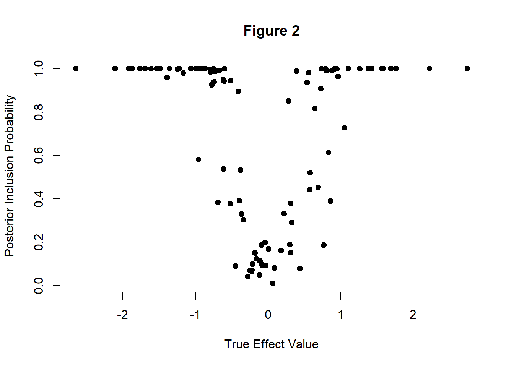 Figure 1 shows that, in this simulation, we observe a shrinkage behavior similar to hard-thresholding (with a small thresholding value). We also see that our estimated lie pretty close to the truth. Figure 2 shows a sharp transition between a very low PIP and a PIP near 1. This sharp transition is what causes the hard-thresholding-like shrinkage we obsersve in figure 1: the posterior mean values \(\mu_1\) closely match the true values for \(b_1\), but are effectively shrunk to 0 in this region by the PIP \(\alpha_i\), and are effectively untouched outside this region.
We can compare figure 2 with the p-values obtained from the normal logistic regressions on the same simulated data, shown in figure 3 below.
plot(sapply(logistic.fits.easy, function(x) summary(x)$coefficients[2, 4]) ~ b_1s, xlab = "True Effect Value", ylab = "Logistic p-value", main = "Figure 3", pch = 19)
Expand here to see past versions of unnamed-chunk-4-1.png:
| Version | Author | Date |
|---|---|---|
| c62537b | Andrew Goldstein | 2019-05-06 |
We see a similar phase transition around the same values of the true effect size, \(|b_1| \le 0.5\).
CAUTION: Cycling Behavior
I have come across a situation in which the iterative algorithm gets caught in a loop, where it cycles between 2 estimates for the coefficients.
set.seed(1138)
n = 100
p = 10
L = 2
V = 9
beta_true = rep(0, p)
# make independent N(0, 1) covariates
X = matrix(rnorm(n * p), nrow = n)
beta_true[1] = rnorm(1, 0, sqrt(V))
beta_true[2] = rnorm(1, 0, sqrt(V))
Y = rbinom(n, 1, exp(X %*% beta_true) / (1 + exp(X %*% beta_true)))
susie.cycle = susie_logistic(Y, X, L, V)I have gotten around this with a more sophisticated convergence criterion (e.g. also store and compare with the estimate 2 iterations ago). However, this situation may be a cause for concern.
CAUTION: More than cycling behavior
I have also come across a situation with erratic behavior. The 7th iteration leads to crazy behavior that doesn’t converge.
set.seed(1138)
n = 100
p = 10
L = 2
V = 9
beta_true = rep(0, p)
# make independent N(0, 1) covariates
X = matrix(rnorm(n * p), nrow = n)
B = 7
b_1s = numeric(B)
b_2s = numeric(B)
#susie.fits.easy2 = list() # logistic SuSiE fits
#logistic.fits.easy2 = list() # logistic regression fits
for (i in 1:B) {
beta_true[1] = rnorm(1, 0, sqrt(V))
beta_true[2] = rnorm(1, 0, sqrt(V))
b_1s[i] = beta_true[1]
b_2s[i] = beta_true[2]
Y = rbinom(n, 1, exp(X %*% beta_true) / (1 + exp(X %*% beta_true)))
#susie.fits.easy2[[i]] = susie_logistic(Y, X, L, V)
#logistic.fits.easy2[[i]] = glm(Y ~ X, family = "binomial")
}Increasing the maximum number of iterations sometimes solves the issue, so perhaps it’s just that convergence is slow.
Another fix is setting \(\sigma_0^2\) to be smaller. There appears to be an issue when the effect size is too large (caused by separability in the data, so our SEs are huge for our estimates
L = 2
We now repeat the same as above, except with \(L = 2, \sigma_0^2 = 1\), and the second element \(b_2\) also a non-zero.
set.seed(1138)
n = 100
p = 10
L = 2
V = 1
beta_true = rep(0, p)
B = 100
b_1s = numeric(B)
b_2s = numeric(B)
susie.fits.easy2 = list() # logistic SuSiE fits
logistic.fits.easy2 = list() # logistic regression fits
for (i in 1:B) {
beta_true[1] = rnorm(1, 0, sqrt(V))
beta_true[2] = rnorm(1, 0, sqrt(V))
b_1s[i] = beta_true[1]
b_2s[i] = beta_true[2]
# make independent N(0, 1) covariates
X = matrix(rnorm(n * p), nrow = n)
# make response
Y = rbinom(n, 1, exp(X %*% beta_true) / (1 + exp(X %*% beta_true)))
susie.fits.easy2[[i]] = susie_logistic(Y, X, L, V, maxit = 1000)
logistic.fits.easy2[[i]] = glm(Y ~ X, family = "binomial")
}Figures 4(a-b) below plot the estimated value for \(\hat{b}_1 := \sum_{l = 1}^2 \mu_{l,1} \cdot \alpha_{l,1}\) and \(\hat{b}_2 := \sum_{l = 1}^2 \mu_{l,2} \cdot \alpha_{l,2}\) against the true value, where \(\mu_{l,i}\) is the estimated posterior mean, and \(\alpha_{l,i}\) is the estimated posterior inclusion probability, for entry \(i\) in estimated vector \(l\). Figures 5(a-b) below plot the maximum PIP, \(\max_{l \in \{1, 2\}}\alpha_{l,i}\), against the true value of \(b_i\).
#est_b1_max = sapply(susie.fits.easy2, function(x) x$post_alpha[1, which.max(x$post_alpha[1, ]) ]* x$post_mu[1, which.max(x$post_alpha[1, ])])
#est_b2_max = sapply(susie.fits.easy2, function(x) x$post_alpha[2, which.max(x$post_alpha[2, ]) ]* x$post_mu[2, which.max(x$post_alpha[2, ])])
est_alpha1_max = sapply(susie.fits.easy2, function(x) max(x$post_alpha[1, ]))
est_alpha2_max = sapply(susie.fits.easy2, function(x) max(x$post_alpha[2, ]))
est_b = sapply(susie.fits.easy2, function(x) rowSums(x$post_alpha * x$post_mu))
plot(est_b[1, ] ~ b_1s, xlab = "True Effect Value", ylab = "Posterior Estimate", main = "Figure 4(a) - Entry 1", pch = 19)
abline(0, 1)
plot(est_b[2, ] ~ b_2s, xlab = "True Effect Value", ylab = "Posterior Estimate", main = "Figure 4(b) - Entry 2", pch = 19)
abline(0, 1)
plot(est_alpha1_max ~ b_1s, xlab = "True Effect Value", ylab = "Posterior Inclusion Probability", main = "Figure 5(a) - Entry 1", pch = 19)plot(est_alpha2_max ~ b_2s, xlab = "True Effect Value", ylab = "Posterior Inclusion Probability", main = "Figure 5(b) - Entry 2", pch = 19)We see a similar pattern as above, in the case \(L = 1\). The method is also able to detect both effects (when strong enough).
We can compare figures 5(a-b) with the p-values obtained from the normal logistic regressions on the same simulated data, shown in figures 6(a-b) below.
plot(sapply(logistic.fits.easy2, function(x) summary(x)$coefficients[2, 4]) ~ b_1s, xlab = "True Effect Value", ylab = "Logistic p-value", main = "Figure 6(a) - Entry 1", pch = 19)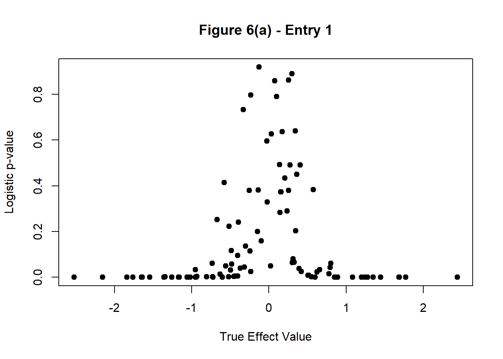
Expand here to see past versions of unnamed-chunk-9-1.png:
| Version | Author | Date |
|---|---|---|
| c62537b | Andrew Goldstein | 2019-05-06 |
plot(sapply(logistic.fits.easy2, function(x) summary(x)$coefficients[3, 4]) ~ b_2s, xlab = "True Effect Value", ylab = "Logistic p-value", main = "Figure 6(b) - Entry 2", pch = 19)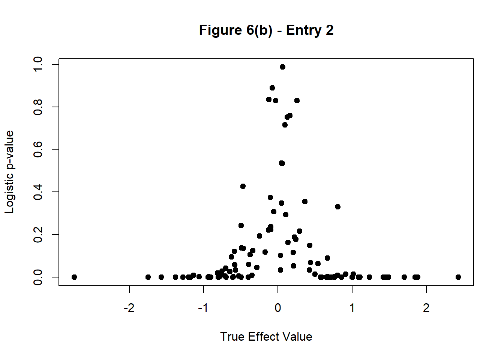
Expand here to see past versions of unnamed-chunk-9-2.png:
| Version | Author | Date |
|---|---|---|
| c62537b | Andrew Goldstein | 2019-05-06 |
We see a similar phase transition around the same values of the true effect size, \(|b_i| \le 0.5\).
Comparison with regular SuSiE
Since the logistic curve is fairly linear in the middle, results from logistic regression and linear regression are often fairly similar for moderate probability values. We can use this fact to compare this implementation of logistic SuSiE against the original SuSiE.
We will start from the above situation where \(n = 100, p = 10, L = 2, \sigma_0^2 = 0.5\), and the entries of X are \(X_{ij} \stackrel{iid}{\sim} \mathcal{N}(0, 1)\).
set.seed(1138)
n = 100
p = 10
L = 2
V = 0.5
beta_true = rep(0, p)
B = 100
b_1s = numeric(B)
b_2s = numeric(B)
susie.fits.easy3 = list() # logistic SuSiE fits
regular.susie.fits.easy3 = list() # regular SuSiE fits
for (i in 1:B) {
beta_true[1] = rnorm(1, 0, sqrt(V))
beta_true[2] = rnorm(1, 0, sqrt(V))
b_1s[i] = beta_true[1]
b_2s[i] = beta_true[2]
# make independent N(0, 1) covariates
X = matrix(rnorm(n * p), nrow = n)
# make response
Y = rbinom(n, 1, exp(X %*% beta_true) / (1 + exp(X %*% beta_true)))
susie.fits.easy3[[i]] = susie_logistic(Y, X, L, V, maxit = 1000)
regular.susie.fits.easy3[[i]] = susieR::susie(X, Y, L = 2)
}Figures 7(a-b) below plot the estimated logistic SuSiE value for \(\hat{b}_1 := \sum_{l = 1}^2 \mu_{l,1} \cdot \alpha_{l,1}\) and \(\hat{b}_2 := \sum_{l = 1}^2 \mu_{l,2} \cdot \alpha_{l,2}\) against the true value, where \(\mu_{l,i}\) is the estimated posterior mean, and \(\alpha_{l,i}\) is the estimated posterior inclusion probability, for entry \(i\) in estimated vector \(l\).
Figures 8(a-b) below plot the same, but for regular SuSiE.
par(mfrow = c(2, 2))
# logistic SuSiE
est_b_log = sapply(susie.fits.easy3, function(x) rowSums(x$post_alpha * x$post_mu))
plot(est_b_log[1, ] ~ b_1s, xlab = "True Effect Value", ylab = "Posterior Estimate", main = "Figure 7(a) - Logistic Entry 1", pch = 19)
abline(0, 1)
plot(est_b_log[2, ] ~ b_2s, xlab = "True Effect Value", ylab = "Posterior Estimate", main = "Figure 7(b) - Logistic Entry 2", pch = 19)
abline(0, 1)
# regular SuSiE
est_b_reg = sapply(regular.susie.fits.easy3, function(x) colSums(x$alpha * x$mu))
plot(est_b_reg[1, ] ~ b_1s, xlab = "True Effect Value", ylab = "Posterior Estimate", main = "Figure 8(a) - Regular Entry 1", pch = 19)
abline(0, 1)
plot(est_b_reg[2, ] ~ b_2s, xlab = "True Effect Value", ylab = "Posterior Estimate", main = "Figure 8(b) - Regular Entry 2", pch = 19)
abline(0, 1)
par(mfrow = c(1, 1))We can see that, for the estimates, regular SuSiE over-shrinks the values heavily.
We can also compare the PIPs estimated. Figures 9(a-b) below plot the maximum PIP from logistic SuSiE, \(\max_{l \in \{1, 2\}}\alpha_{l,i}\), against the true value of \(b_i\). Figures 10(a-b) below plot the same, for regular SuSiE.
par(mfrow = c(2, 2))
# logistic SuSiE
est_alpha1_max_log = sapply(susie.fits.easy3, function(x) max(x$post_alpha[1, ]))
est_alpha2_max_log = sapply(susie.fits.easy3, function(x) max(x$post_alpha[2, ]))
plot(est_alpha1_max_log ~ b_1s, xlab = "True Effect Value", ylab = "Posterior Inclusion Probability", main = "Figure 9(a) - Logistic Entry 1", pch = 19)
plot(est_alpha2_max_log ~ b_2s, xlab = "True Effect Value", ylab = "Posterior Inclusion Probability", main = "Figure 9(b) - Logistic Entry 2", pch = 19)
# regular SuSiE
est_alpha1_max_reg = sapply(regular.susie.fits.easy3, function(x) max(x$alpha[, 1]))
est_alpha2_max_reg = sapply(regular.susie.fits.easy3, function(x) max(x$alpha[, 2]))
plot(est_alpha1_max_reg ~ b_1s, xlab = "True Effect Value", ylab = "Posterior Inclusion Probability", main = "Figure 10(a) - Regular Entry 1", pch = 19)
plot(est_alpha2_max_reg ~ b_2s, xlab = "True Effect Value", ylab = "Posterior Inclusion Probability", main = "Figure 10(b) - Regular Entry 2", pch = 19)
Expand here to see past versions of unnamed-chunk-12-1.png:
| Version | Author | Date |
|---|---|---|
| c62537b | Andrew Goldstein | 2019-05-06 |
par(mfrow = c(1, 1))We see that the PIPs are virtually identical between the logistic case and the regular case.
Lastly, we can compare the fitted values between the two methods. Since the logistic curve is roughly linear around the middle (when the linear predictor is close to 0, i.e. the fitted probability is close to 0.5), we expect the predicted values to be similar in this range. We can compare how similar they are with how similar plain vanilla linear and logistic regressions are on the same data.
The figures below show 3 instances of running our methods, the left column comparing the SuSiE fitted values and the right column comparing the plain vanilla fitted values. Here, we set all but the first true coefficients to 0, and use a prior variance equal to the true \(b_1^2\) value.
set.seed(1138)
n = 100
p = 10
L = 1
beta_true = rep(0, p)
par(mfrow = c(3, 2))
for (i in 1:3) {
V = i^2 # prior variance
beta_true[1] = i
# make independent N(0, 1) covariates
X = matrix(rnorm(n * p), nrow = n)
# make response
Y = rbinom(n, 1, exp(X %*% beta_true) / (1 + exp(X %*% beta_true)))
fit.susie.log = susie_logistic(Y, X, L, V, maxit = 1000)
fit.susie.lin = susieR::susie(X, Y, L = 1)
fit.log = glm(Y ~ X, family = "binomial")
fit.lin = lm(Y ~ X)
pred.susie.log = faraway::ilogit(fit.susie.log$intercept + (X %*% rowSums(fit.susie.log$post_alpha * fit.susie.log$post_mu)))
pred.susie.lin = fit.susie.lin$fitted
pred.log = predict(fit.log, type = "response")
pred.lin = predict(fit.lin)
plot(pred.susie.lin ~ pred.susie.log, xlab = "SuSiE Logistic Fitted", ylab = "SuSiE Linear Fitted", main = paste("b_1 = ", i, sep = ""), pch = 19)
abline(a = 0, b = 1)
plot(pred.lin ~ pred.log, xlab = "Regular Logistic Fitted", ylab = "Regular Linear Fitted", main = paste("b_1 = ", i, sep = ""), pch = 19)
abline(a = 0, b = 1)
}Error in (function (formula, data = NULL, subset = NULL, na.action = na.fail, : variable lengths differ (found for 'pred.susie.log')par(mfrow = c(1, 1))As we can see, just like in the regular linear/logistic regression case (right column), the SuSiE comparison (left column) shows that the predicted values are close in the middle (near a predicted probability of 0.5).
These next plots show the same information, except we have a different number of non-zero true coefficients. These coefficients are randomly generated from a \(\mathcal{N}(0, \sqrt{0.5}^2)\) distribution.
set.seed(1138)
n = 100
p = 10
V = 0.5
beta_true = rep(0, p)
par(mfrow = c(3, 2))
for (i in 1:3) {
beta_true[i] = rnorm(1, 0, sqrt(V))
# make independent N(0, 1) covariates
X = matrix(rnorm(n * p), nrow = n)
# make response
Y = rbinom(n, 1, exp(X %*% beta_true) / (1 + exp(X %*% beta_true)))
fit.susie.log = susie_logistic(Y, X, L = i, V, maxit = 1000)
fit.susie.lin = susieR::susie(X, Y, L = i)
fit.log = glm(Y ~ X, family = "binomial")
fit.lin = lm(Y ~ X)
pred.susie.log = faraway::ilogit(fit.susie.log$intercept + (X %*% rowSums(fit.susie.log$post_alpha * fit.susie.log$post_mu)))
pred.susie.lin = fit.susie.lin$fitted
pred.log = predict(fit.log, type = "response")
pred.lin = predict(fit.lin)
plot(pred.susie.lin ~ pred.susie.log, xlab = "SuSiE Logistic Fitted", ylab = "SuSiE Linear Fitted", main = paste("Adding b_", i, " = ", round(beta_true[i], 3), sep = ""), pch = 19)
abline(a = 0, b = 1)
plot(pred.lin ~ pred.log, xlab = "Regular Logistic Fitted", ylab = "Regular Linear Fitted", main = paste("Adding b_", i, " = ", round(beta_true[i], 3), sep = ""), pch = 19)
abline(a = 0, b = 1)
}Error in (function (formula, data = NULL, subset = NULL, na.action = na.fail, : variable lengths differ (found for 'pred.susie.log')par(mfrow = c(1, 1))We still see that the different versions of SuSiE track each other well near the middle. Curiously, in the case where we have only 1 or 2 non-zero coefficients, the regular and logistic SuSiE predicted values appear to be a smooth function of one another. It is only in the case where we add the third non-zero coefficient do we see this clean relationship break down.
Medium Demonstration
As a medium difficulty demonstration, let \(n = 100, p = 10, L = 3, \sigma_0^2 = 5\).
We create the data \(\mathbf{X}\) where all entries are iid standard normal. I then set the 2nd column to be identical to the 3rd, and the 7th column identical to the 6th (when running this simulation, \(b_3\) and \(b_6\) were generated to be non-zero, and \(b_2\) and \(b_7\) were generated to be 0, so this was done in the spirit of the toy example from the paper).
We then simulated \(\mathbf{y}\) from the specified bernoulli model, \[ y_i \stackrel{\perp}{\sim} \text{Bern}\Bigg(\frac{e^{(\mathbf{Xb})_i}}{1 + e^{(\mathbf{Xb})_i}}\Bigg) \]
### TEST susie_logistic
set.seed(1138)
n = 100
p = 10
L = 3
pi = rep(1 / p, p) # prior weights
V = 5 # prior variance
beta_true = rep(0, p)
for (l in 1:L) {
b_l = rnorm(1, 0, sqrt(V))
gamma_l = rmultinom(1, 1, pi)
beta_l = b_l * gamma_l
beta_true = beta_true + beta_l
}
# simulate data, induce correlations
X = matrix(rnorm(n*p, 0, 1), nrow = n, ncol = p)
X[, 2] = X[, 3]
X[, 7] = X[, 6]
# make response
Y = rbinom(n, 1, exp(X %*% beta_true + 2) / (1 + exp(X %*% beta_true + 2)))
susie.logistic.fit = susie_logistic(Y, X, L, V)Figure 11 below plots the true values for \(\mathbf{b}\).
plot(beta_true, ylab = "True Value", main = "Figure 1", pch = 19)
Expand here to see past versions of unnamed-chunk-16-1.png:
| Version | Author | Date |
|---|---|---|
| c62537b | Andrew Goldstein | 2019-05-06 |
The 3rd and 6th are around -1.3, and the 5th is around 0.75.
Figures 12(a-c) below plots the posterior means for the 3 vectors estimated from this procedure (calculated as \(\mathbf{\bar{b}}_l := \alpha_l \circ \mu_{1l}\) using \(\alpha_l, \mu_{1l}\) returned from the logistic-version of the IBFS algorithm):
b_1_post = susie.logistic.fit$post_mu[, 1] * susie.logistic.fit$post_alpha[, 1]
b_2_post = susie.logistic.fit$post_mu[, 2] * susie.logistic.fit$post_alpha[, 2]
b_3_post = susie.logistic.fit$post_mu[, 3] * susie.logistic.fit$post_alpha[, 3]
plot(b_1_post, ylab = "Posterior Mean Value", main = "Figure 12(a)", pch = 19)
Expand here to see past versions of unnamed-chunk-17-1.png:
| Version | Author | Date |
|---|---|---|
| c62537b | Andrew Goldstein | 2019-05-06 |
plot(b_2_post, ylab = "Posterior Mean Value", main = "Figure 12(b)", pch = 19)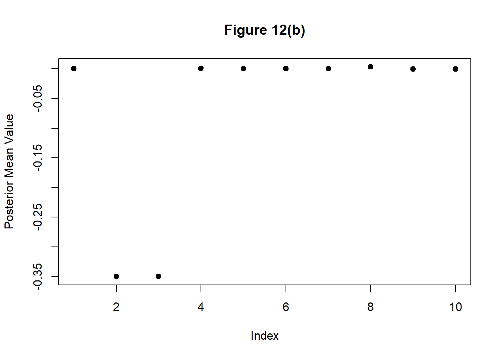
plot(b_3_post, ylab = "Posterior Mean Value", main = "Figure 12(c)", pch = 19)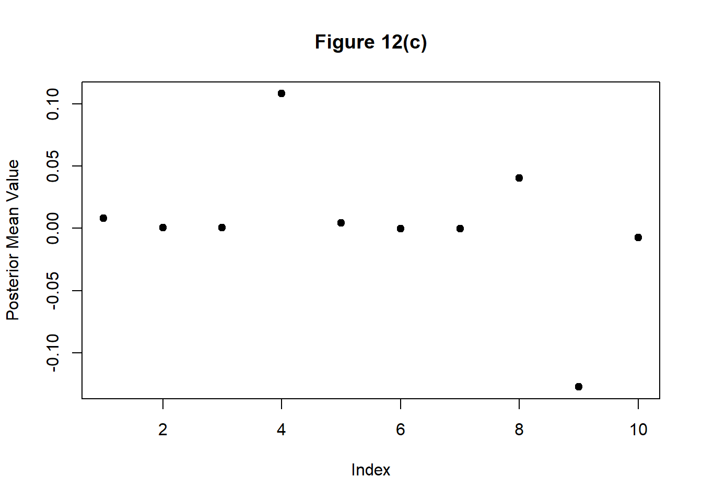 We can see that the first estimated vector captures our constructed correlation between the 2nd and 3rd columns, the second estimated vector captures our constructed correlation between the 6th and 7th columns, and the third estimated vector captures the individual effect of the 5th column.
Figures 13(a-c) below plots our estimated PIPs, \(\alpha_1, \alpha_2, \alpha_3\):
plot(susie.logistic.fit$post_alpha[, 1], ylab = "Posterior Inclusion Probability", main = "Figure 13(a)", pch = 19)
Expand here to see past versions of unnamed-chunk-18-1.png:
| Version | Author | Date |
|---|---|---|
| c62537b | Andrew Goldstein | 2019-05-06 |
plot(susie.logistic.fit$post_alpha[, 2], ylab = "Posterior Inclusion Probability", main = "Figure 13(b)", pch = 19)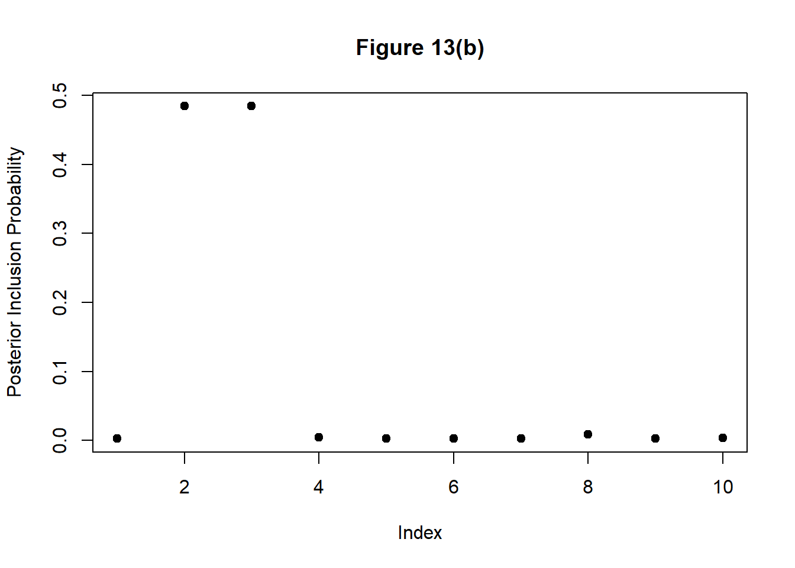
plot(susie.logistic.fit$post_alpha[, 3], ylab = "Posterior Inclusion Probability", main = "Figure 13(c)", pch = 19)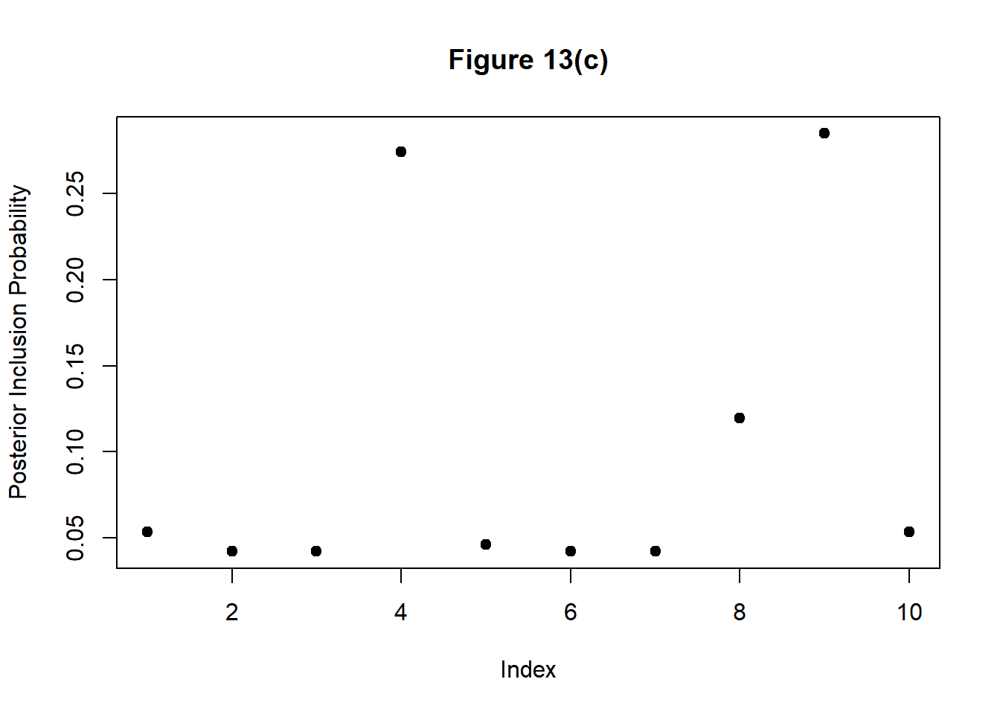 These groups of correlated predictors are shows from the PIPs.
Hard Demonstration
As a hard demonstration, let \(n = 1,000, p = 100, L = 10, \sigma_0^2 = 5\).
We create the data \(\mathbf{X}\) where all entries are iid standard normal. I then set the 2nd column to be identical to the 1st, the 88th column identical to the 87th, and the 89th column highly negatively correlated with the 87th (when running this simulation, \(b_1\) and \(b_87\) were generated to be non-zero, and \(b_2\), \(b_{88}\) and \(b_{89}\) were generated to be 0, so this was done in the spirit of the toy example from the paper).
We then simulated \(\mathbf{y}\) from the specified bernoulli model, \[ y_i \stackrel{\perp}{\sim} \text{Bern}\Bigg(\frac{e^{(\mathbf{Xb})_i}}{1 + e^{(\mathbf{Xb})_i}}\Bigg) \]
set.seed(1138)
n = 1000
p = 100
L = 10
pi = rep(1 / p, p) # prior weights
V = 5 # prior variance
beta_true = rep(0, p)
for (l in 1:L) {
b_l = rnorm(1, 0, sqrt(V))
gamma_l = rmultinom(1, 1, pi)
beta_l = b_l * gamma_l
beta_true = beta_true + beta_l
}
# simulate data, induce correlations
X = matrix(rnorm(n*p, 0, 1), nrow = n, ncol = p)
X[, 2] = X[, 1]
X[, 88] = X[, 87]
X[, 89] = runif(n, -1, -.7) * X[, 87]
# make response
Y = rbinom(n, 1, exp(X %*% beta_true + 2) / (1 + exp(X %*% beta_true + 2)))
susie.logistic.fit = susie_logistic(Y, X, L, V)Figure 14 below plots the true values for \(\mathbf{b}\) (the numbers correspond to the points and indices of non-zero true effects).
plot(beta_true[beta_true == 0] ~ which(beta_true == 0), xlim = c(0, 101), ylim = range(beta_true) + c(-.1, .1), xlab = "Index", ylab = "True Value", main = "Figure 14", pch = 19)
text(which(beta_true != 0), beta_true[beta_true != 0], labels = which(beta_true != 0))
Expand here to see past versions of unnamed-chunk-20-1.png:
| Version | Author | Date |
|---|---|---|
| c62537b | Andrew Goldstein | 2019-05-06 |
We can see that true effects 41 and 56 are very small, and 27, 60, and 87 are also small-ish.
Figures 15(a-j) below plots the posterior means for the 10 vectors estimated from this procedure (calculated as \(\mathbf{\bar{b}}_l := \alpha_l \circ \mu_{1l}\) using \(\alpha_l, \mu_{1l}\) returned from the logistic-version of the IBFS algorithm):
par(mfrow = c(5, 2))
for (l in 1:L) {
b_l_post = susie.logistic.fit$post_mu[, l] * susie.logistic.fit$post_alpha[, l]
plot(b_l_post[abs(b_l_post) < .01] ~ which(abs(b_l_post) < .01), xlim = c(0, 101), ylim = range(b_l_post) + c(-.1, .1), xlab = "Index", ylab = "Posterior Mean Value", main = paste("Figure 15(", letters[l], ")", sep = ""), pch = 19)
text(which(abs(b_l_post) >= .01), b_l_post[abs(b_l_post) >= .01], labels = which(abs(b_l_post) >= .01))
}Warning in min(x): no non-missing arguments to min; returning InfWarning in max(x): no non-missing arguments to max; returning -InfError in plot.window(...): need finite 'ylim' valuespar(mfrow = c(1, 1))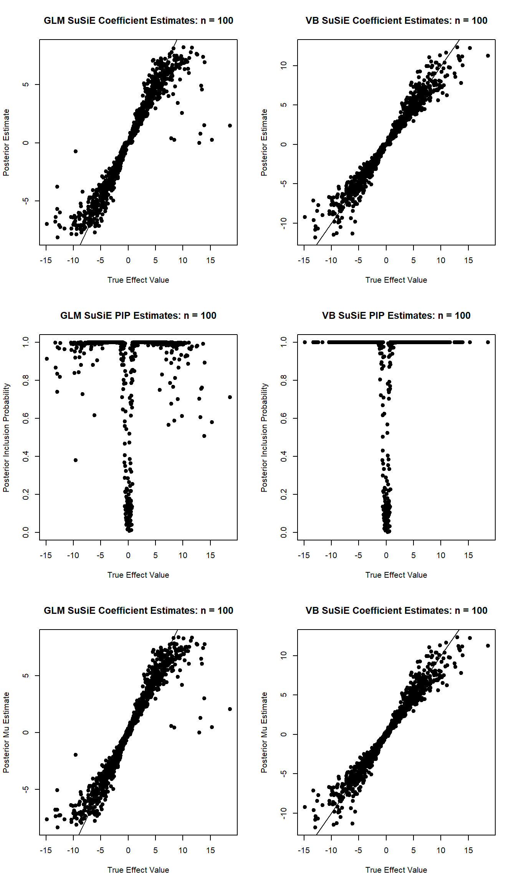
Expand here to see past versions of unnamed-chunk-21-1.png:
| Version | Author | Date |
|---|---|---|
| c62537b | Andrew Goldstein | 2019-05-06 |
(NOTE: In figures 15(a) and 15(h), 1 and 2 are close together, so it looks like the number 12. But it is really just 1 and 2).
We can see that the first estimated vector (15a) (and 8th, 15(h)) captures our constructed correlation between the 1st and 2nd columns, and 7th vector (11g) captures our constructed correlation between the 87th, 88th, and 89th columns (note the signs: 89 was constructed to be negatively correlated with the true effect column 87).
We also see that the groups (1, 2) and (76) are each captured twice, lending to their large coefficients. As a result, we have not captured the true (small) effects from 41 and 56.
Figures 16(a-j) below plots our estimated PIPs, \(\alpha_1, \alpha_2, \alpha_3\):
par(mfrow = c(5, 2))
for (l in 1:L) {
alpha_l = susie.logistic.fit$post_alpha[, l]
plot(alpha_l[alpha_l < .01] ~ which(alpha_l < .01), xlim = c(0, 101), ylim = c(0, 1), xlab = "Index", ylab = "Posterior Inclusion Probability", main = paste("Figure 16(", letters[l], ")", sep = ""), pch = 19)
text(which(alpha_l >= .01), alpha_l[alpha_l >= .01], labels = which(alpha_l >= .01))
}Error in (function (formula, data = NULL, subset = NULL, na.action = na.fail, : invalid type (NULL) for variable 'alpha_l[alpha_l < 0.01]'par(mfrow = c(1, 1))These groups of correlated predictors are shows from the PIPs.
Signal Level Testing
In this section, I keep the same model matrix \(X\), but center and scale the columns to have unit 2-norm. I then set a single non-zero effect with a range of signal levels (\(\sigma_0^2\)) to see at what levels the signal can be found. I also set another column of X to be highly positively correlated with the true effect column.
I have set \(n = 1000, p = 10, L = 1\).
Here, I always set the first element to be non-zero, and the 5th column to be correlated with the 1st.
At each signal level \(\sigma_0^2 \in \{1, 5, 10, 25, 50\}\), I replicate \(B = 10\) times the following procedure:
Draw \(b_1 \sim \mathcal{N}(0, \sigma_0^2)\);
Simulate \(Y_i \sim \text{Bern}\Bigg(\frac{e^{x_i^T b}}{1 + e^{x_i^T b}}\Bigg)\);
Run the logistic version of SuSiE with an intercept on the data with the noise level fixed and known.
In the plots below, the first set of 5 show the posterior mean values, \(\mu_{1} \circ \alpha\). For indices where the PIP, \(\alpha_j\), was \(\ge 0.05\), I show the point as its index number (ideally, we would only see 1 and 5). Otherwise, the point is a dot.
The second set of 5 show the PIPs, again with a number if the PIP was \(\ge 0.05\).
set.seed(1138)
B = 10 # times to repeat at each noise level
n = 1000
p = 10
L = 1
X = matrix(rnorm(n*p, 0, 1), nrow = n, ncol = p)
X[, 5] = runif(n, .7, 1) * X[, 1]
X = apply(X, MARGIN = 2, function(x) x - mean(x))
X = apply(X, MARGIN = 2, function(x) x / norm(x, "2"))
beta_true = rep(0, p)
Vs = c(1, 5, 10, 25, 50)
beta_true_1 = matrix(nrow = length(Vs), ncol = B)
susie.logistic.list = list()
for (i in 1:length(Vs)) {
V = Vs[i]
susie.logistic.list[[i]] = list()
names(susie.logistic.list)[i] = paste("Vs_", V, sep = "")
for (j in 1:B) {
beta_true[1] = rnorm(1, 0, sqrt(V))
Y = rbinom(n, 1, exp(X %*% beta_true) / (1 + exp(X %*% beta_true)))
susie.logistic.list[[i]][[j]] = susie_logistic(Y, X, L, V)
beta_true_1[i, j] = beta_true[1]
}
}
par(mfrow = c(5, 2))
for (i in 1:length(Vs)) {
V = Vs[i]
for (j in 1:B) {
a_l_post = susie.logistic.list[[i]][[j]]$post_alpha[, 1]
b_l_post = susie.logistic.list[[i]][[j]]$post_mu[, 1] * a_l_post
plot(b_l_post[abs(a_l_post) < .05] ~ which(abs(a_l_post) < .05), xlim = c(1, 10), ylim = range(b_l_post) + c(-.1, .1), xlab = "Index", ylab = "Posterior Mean Value", main = paste("True effect 1: ", round(beta_true_1[i, j], 2), " ::: Signal Level: ", round(V, 2), sep = ""), pch = 19)
text(which(abs(a_l_post) >= .05), b_l_post[abs(a_l_post) >= .05], labels = which(abs(a_l_post) >= .05))
}
}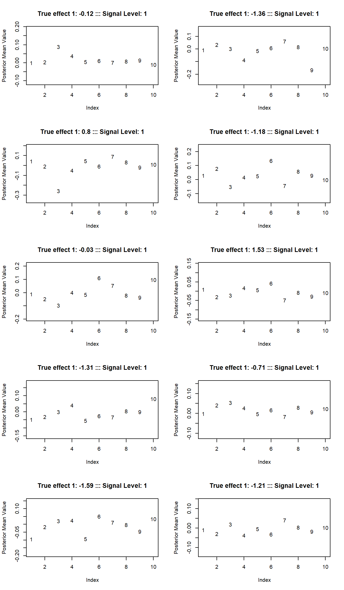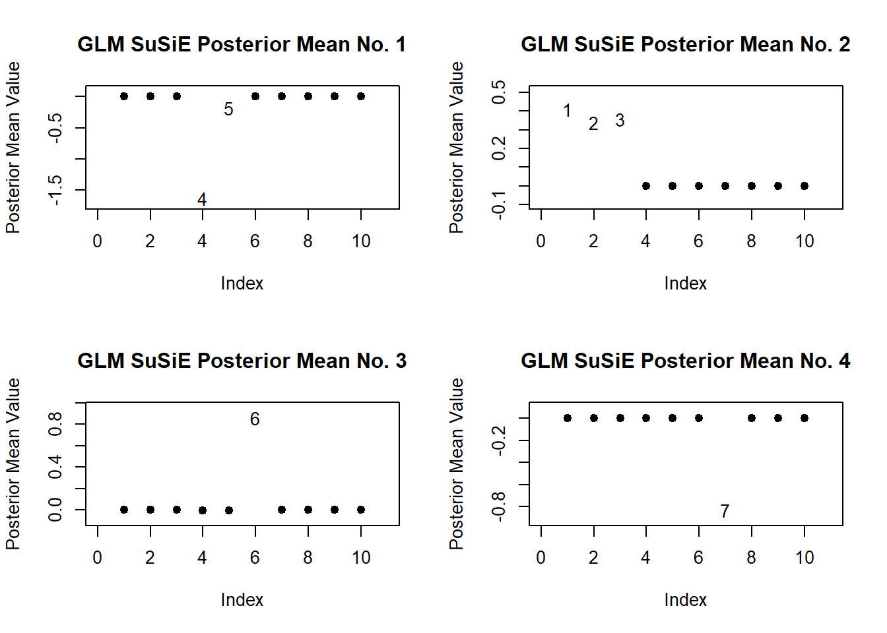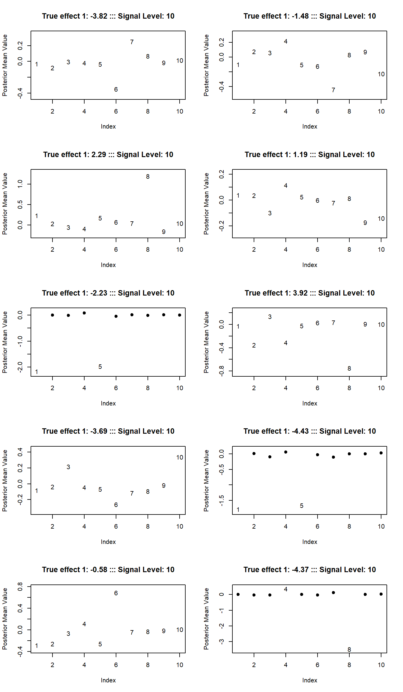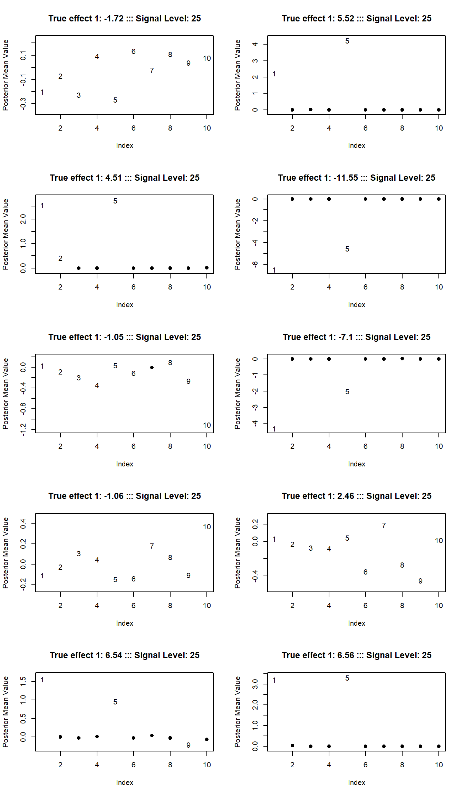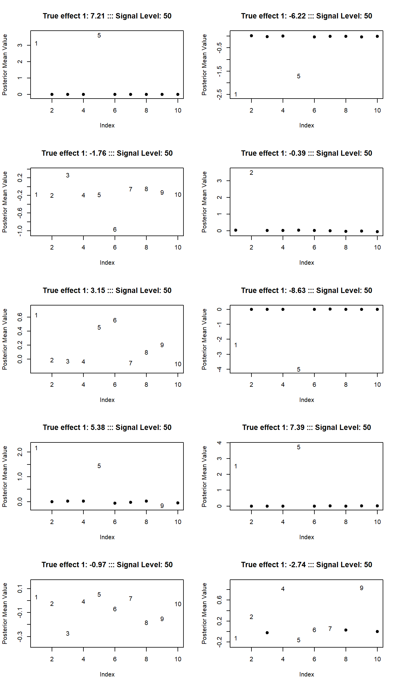
par(mfrow = c(1, 1))
par(mfrow = c(5, 2))
for (i in 1:length(Vs)) {
V = Vs[i]
for (j in 1:B) {
a_l_post = susie.logistic.list[[i]][[j]]$post_alpha[, 1]
plot(a_l_post[abs(a_l_post) < .05] ~ which(abs(a_l_post) < .05), xlim = c(1, 10), ylim = c(0, 1), xlab = "Index", ylab = "Posterior Inclusion Probability", main = paste("True effect 1: ", round(beta_true_1[i, j], 2), " ::: Signal Level: ", round(V, 2), sep = ""), pch = 19)
text(which(abs(a_l_post) >= .05), a_l_post[abs(a_l_post) >= .05], labels = which(abs(a_l_post) >= .05))
}
}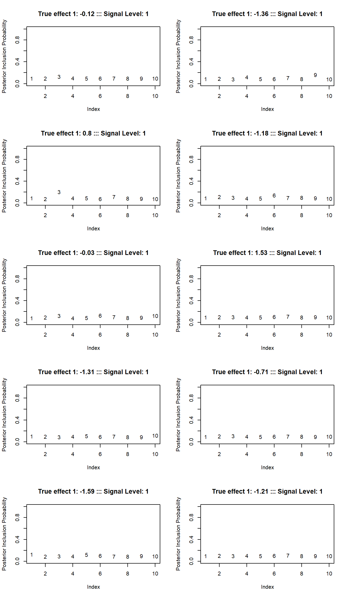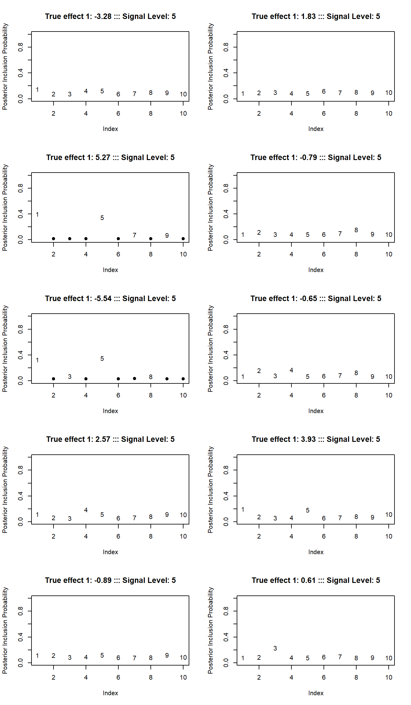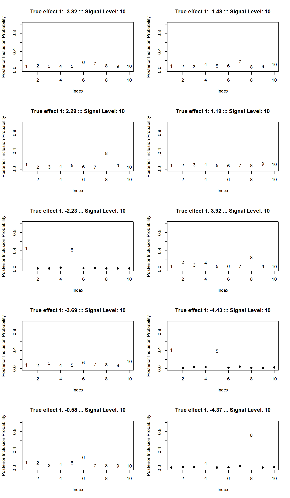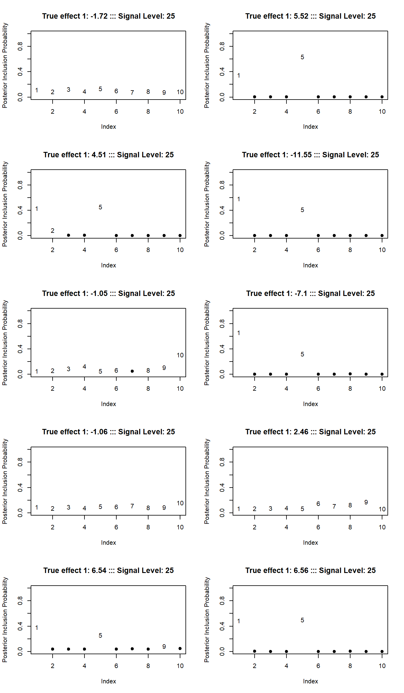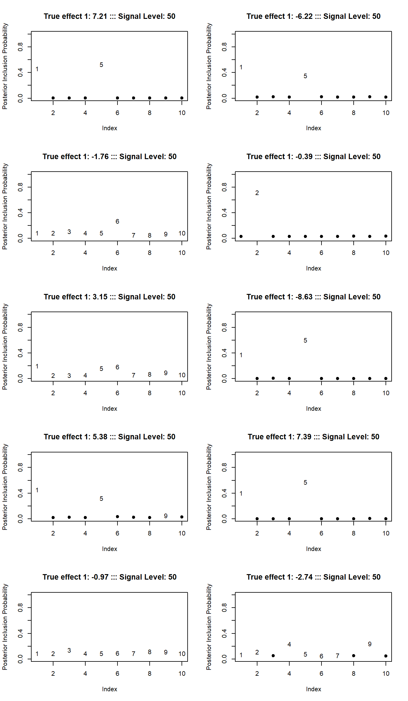
par(mfrow = c(1, 1))As we can see, we require relatively large effects in order to determine that 1 and/or 5 is contributing to the response. However, a regular logistic regression on the columns of X (removing the 5th column) in these settings also have a difficult time determing that the 1 is the effect variable.
Signal Testing with Genotype Matrix
Here, I perform a similar test as above, except the design matrix has columns whose entries are \(X_{ij} \in \{0, 1, 2\}\). I do not center or scale these variables. As before, the 1st effect is always the only non-null effect. And the 5th column is highly positively correlated with the 1st (w.p. 0.9, it copies column 1, otherwise it is random).
Here, we test \(\sigma_0^2 \in \{1, 2, 3, 4, 5\}\)
set.seed(1138)
B = 10 # times to repeat at each noise level
n = 1000
p = 10
L = 1
X = matrix(rbinom(n * p, 2, runif(n * p)), nrow = n, ncol = p)
copy_ind = runif(n, 0, 1) <= 0.9
X[copy_ind, 5] = X[copy_ind, 1]
beta_true = rep(0, p)
Vs = 1:5
beta_true_1 = matrix(nrow = length(Vs), ncol = B)
susie.logistic.list = list()
for (i in 1:length(Vs)) {
V = Vs[i]
susie.logistic.list[[i]] = list()
names(susie.logistic.list)[i] = paste("Vs_", V, sep = "")
for (j in 1:B) {
beta_true[1] = rnorm(1, 0, sqrt(V))
Y = rbinom(n, 1, exp(X %*% beta_true) / (1 + exp(X %*% beta_true)))
susie.logistic.list[[i]][[j]] = susie_logistic(Y, X, L, V)
beta_true_1[i, j] = beta_true[1]
}
}Error in while ((norm(beta_post - beta_post_init, "1") > tol) & (norm(beta_post - : missing value where TRUE/FALSE neededpar(mfrow = c(5, 2))
for (i in 1:length(Vs)) {
V = Vs[i]
for (j in 1:B) {
a_l_post = susie.logistic.list[[i]][[j]]$post_alpha[, 1]
b_l_post = susie.logistic.list[[i]][[j]]$post_mu[, 1] * a_l_post
plot(b_l_post[abs(a_l_post) < .05] ~ which(abs(a_l_post) < .05), xlim = c(1, 10), ylim = range(b_l_post) + c(-.1, .1), xlab = "Index", ylab = "Posterior Mean Value", main = paste("True effect 1: ", round(beta_true_1[i, j], 2), " ::: Signal Level: ", round(V, 2), sep = ""), pch = 19)
text(which(abs(a_l_post) >= .05), b_l_post[abs(a_l_post) >= .05], labels = which(abs(a_l_post) >= .05))
}
}
Error in susie.logistic.list[[i]][[j]]: subscript out of boundspar(mfrow = c(1, 1))
par(mfrow = c(5, 2))
for (i in 1:length(Vs)) {
V = Vs[i]
for (j in 1:B) {
a_l_post = susie.logistic.list[[i]][[j]]$post_alpha[, 1]
plot(a_l_post[abs(a_l_post) < .05] ~ which(abs(a_l_post) < .05), xlim = c(1, 10), ylim = c(0, 1), xlab = "Index", ylab = "Posterior Inclusion Probability", main = paste("True effect 1: ", round(beta_true_1[i, j], 2), " ::: Signal Level: ", round(V, 2), sep = ""), pch = 19)
text(which(abs(a_l_post) >= .05), a_l_post[abs(a_l_post) >= .05], labels = which(abs(a_l_post) >= .05))
}
}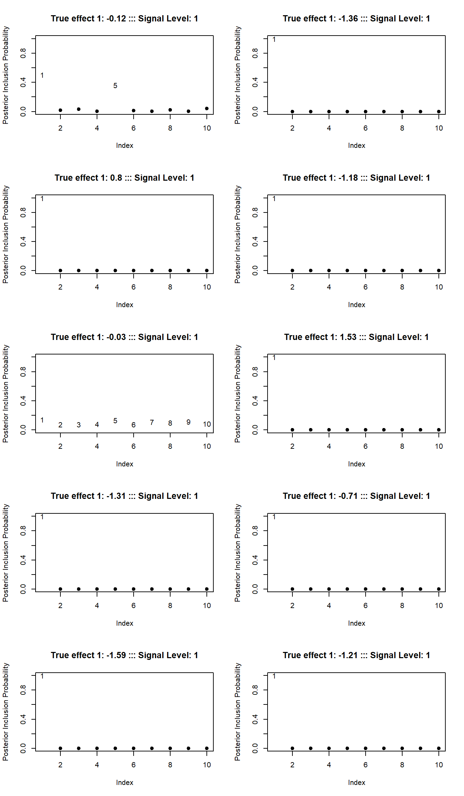
Error in susie.logistic.list[[i]][[j]]: subscript out of boundspar(mfrow = c(1, 1))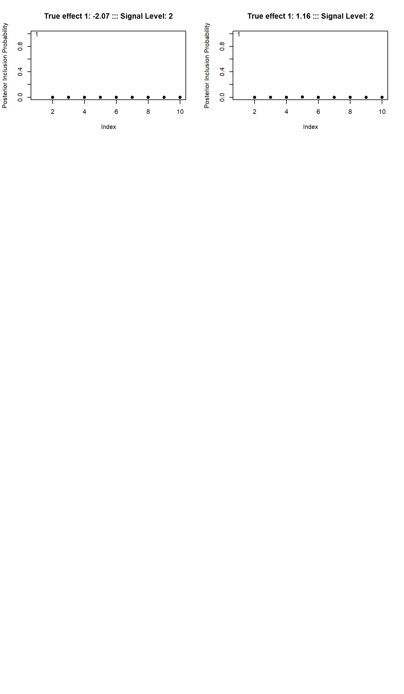
We can see that much smaller effects are detectable in this setting than above, with an arbitrary center and scaled design matrix \(X\).
Misspecified \(L\)
In regular SuSiE, the algorithm is robust to misspecifying the value for \(L\). For instance, say there are 3 true groups of correlated predictors. Then even we specify, say, \(L = 5\), the algorithm will give us 3 meaningful credible sets and 7 impure ones (see sections 3.4.2 and 3.5 of the SuSiE paper). In this section, I show via example that this appears to hold true in the logistic version as well.
For example, consider the easy case where \(n = 1000\), \(p = 10\), each entry \(X_{ij} \stackrel{iid}{\sim} \mathcal{N}(0, 1)\), and the first three effects are \(b_1 = 1, b_2 = -0.75, b_3 = 0.5\). I test when I set \(L = 3\) (the optimal value), \(L = 5\), and \(L = 10\).
set.seed(1138)
n = 1000
p = 10
L = 1
beta_true = rep(0, p)
beta_true[1:3] = c(1, -.75, .5)
V = 1
X = matrix(rnorm(n * p), nrow = n)
# make response
Y = rbinom(n, 1, exp(X %*% beta_true) / (1 + exp(X %*% beta_true)))
fit.susie.log3 = susie_logistic(Y, X, L = 3, V, maxit = 1000)
fit.susie.log5 = susie_logistic(Y, X, L = 5, V, maxit = 1000)
fit.susie.log10 = susie_logistic(Y, X, L = 10, V, maxit = 1000)
par(mfcol = c(3, 2))
matplot(fit.susie.log3$post_alpha, xlab = "Index", ylab = "Posterior Inclusion Probability", main = "L = 3")
matplot(fit.susie.log5$post_alpha, xlab = "Index", ylab = "Posterior Inclusion Probability", main = "L = 5")
matplot(fit.susie.log10$post_alpha, xlab = "Index", ylab = "Posterior Inclusion Probability", main = "L = 10")
plot(rowSums(fit.susie.log3$post_alpha * fit.susie.log3$post_mu), xlab = "Index", ylab = "Posterior Mean", main = "L = 3", pch = 19)
plot(rowSums(fit.susie.log5$post_alpha * fit.susie.log5$post_mu), xlab = "Index", ylab = "Posterior Mean", main = "L = 5", pch = 19)
plot(rowSums(fit.susie.log10$post_alpha * fit.susie.log10$post_mu), xlab = "Index", ylab = "Posterior Mean", main = "L = 10", pch = 19)
par(mfcol = c(1, 1))We can see that having a value of \(L\) too large adds groups with a lot of impurity in the PIPs (these groups being roughly identical, which is peculiar to me). Unsurprisingly, since our PIPs are forced to sum to 1, adding more groups will always add to the posterior means of each coefficient (assuming effects from different groups don’t cancel out due to having opposite signs). We can see this on the right side of the plots above (for \(L = 3\), coefficients 4-10 are close to 0, but for \(L = 5\) and \(L = 10\), these effects start to deviate from 0).
Session information
sessionInfo()R version 3.5.1 (2018-07-02)
Platform: x86_64-w64-mingw32/x64 (64-bit)
Running under: Windows 10 x64 (build 17763)
Matrix products: default
locale:
[1] LC_COLLATE=English_United States.1252
[2] LC_CTYPE=English_United States.1252
[3] LC_MONETARY=English_United States.1252
[4] LC_NUMERIC=C
[5] LC_TIME=English_United States.1252
attached base packages:
[1] stats graphics grDevices utils datasets methods base
loaded via a namespace (and not attached):
[1] Rcpp_1.0.0 knitr_1.20 whisker_0.3-2
[4] magrittr_1.5 workflowr_1.1.1 MASS_7.3-50
[7] splines_3.5.1 lattice_0.20-35 minqa_1.2.4
[10] susieR_0.6.2.0396 stringr_1.3.1 tools_3.5.1
[13] grid_3.5.1 nlme_3.1-137 R.oo_1.22.0
[16] faraway_1.0.7 git2r_0.23.0 htmltools_0.3.6
[19] matrixStats_0.54.0 yaml_2.2.0 lme4_1.1-18-1
[22] rprojroot_1.3-2 digest_0.6.18 Matrix_1.2-14
[25] nloptr_1.2.0 R.utils_2.7.0 evaluate_0.11
[28] rmarkdown_1.10 stringi_1.2.4 compiler_3.5.1
[31] backports_1.1.2 R.methodsS3_1.7.1 expm_0.999-3 This reproducible R Markdown analysis was created with workflowr 1.1.1